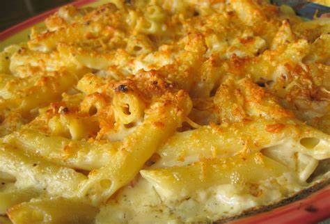

Penne Rusticá

Shrimp, grilled chicken, and smoked prosciutto. Baked in a cheese sauce
Ingredients
Gratinata Sauce:
- 3 Tbsp. Butter
- 2 Tbsp. Minced Garlic
- 3 Tbsp. Marsala Wine
- 2 Cups Heavy Cream
- 1 Cup Grated Parmesan Cheese
- 1/2 Cup Milk
- 1/2 Cup Chicken Broth
- 1 Tbsp. Cornstarch
- 1 Tbsp. Grey Poupon Dijon mustard
- 2 tsp. Minced Fresh Rosemary
- 1/2 tsp. Salt
- 1/2 tsp. Minced Fresh Thyme
- 1/4 tsp. Ground Cayenne Pepper
- 1 lb. Penne Rigate Pasta, Cooked
- 12 Medium Shrimp, Peeled and Deveined
- 2 Skinless, Boneless Chicken Breast Fillets
- 1/2 c. (about 2 oz.) Thick Sliced Smoked Prosciutto, Chopped
Topping:
- 3 Tbsp. Grated Parmesan Cheese
- 1 1/2 tsp. Paprika
Optional:
- 12 Sliced Pimentos
- 4 Springs Fresh Rosemary
Steps
- Preheat barbecue grill to high heat.
- Prepare gratinata sauce by melting 3 tablespoons of butter in a medium saucepan over medium/low heat. Add garlic and sweat it for about 5 minutes. Be sure the garlic doesn't brown. Add the Marsala wine and cook for another 5 minutes. Add the remaining ingredients for the sauce and whisk well until smooth. Bring mixture to a simmer and keep it there for 10 minutes or until it's thick. Cover sauce and remove from heat.
- Cook pasta following directions on the package (7 to 9 minutes). You want the pasta tender but not mushy (just al dente). Strain pasta and set it aside.
- Pound the thick end of your chicken breast with a kitchen mallet to make them a uniform thickness. Rub chicken with olive oil, then sprinkle salt and pepper. Spear the shrimp on skewers (6 per skewer), then rub them with olive oil and sprinkle with salt and pepper.
- Grill chicken for 5 to 6 minutes per side. Grill shrimp for 2 minutes per side. When the chicken is done, slice each breast into strips.
- Preheat oven to 500. You can make this in one large ceramic dish or individually in smaller dishes.
- To Serve In a Large Dish:
- To serve in a Large dish, combine the pasta, chicken, prosciutto, shrimp, and sauce. Place in a large oven-safe dish. Combine 3 tablespoons of grated Parmesan cheese with 1 1/2 tsp. Paprika, sprinkle over the top and bake for 10 to 12 minutes or until top begins to brown.
- To Serve In a Small Individual Dishes:
- For smaller dishes, use 9-in glass or ceramic pie plates. Load 3 cups of pasta into each baking dish. Add one-quarter of the chicken, 3 shrimp, and 2 tablespoons of prosciutto to each serving. Spoon 3/4 cup of gratinata sauce on each serving and toss to coat. Sprinkle about 1 tablespoon of Parmesan/Paprika mixture over the top of each serving. Bake the dishes for 10 to 12 minutes or until tops begin to brown.
- Arrange three pimentos on the top of each serving, then add a sprig of rosemary in the center for garnish.
- Serve